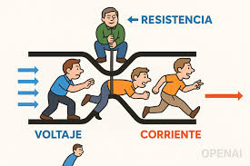
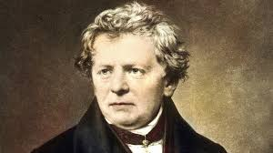
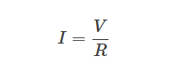
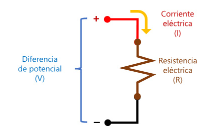
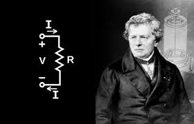

Imagine you're assembling a circuit for the first time. You have a battery, some wires, a resistor, and a small LED. You connect everything, but it doesn’t turn on. And then, as often happens, you ask yourself: why isn’t anything happening?
Well, this is one of those moments when a key rule comes into play—one that, even if it doesn’t seem like it, explains everything: Ohm's Law. It’s one of those things that, once you understand it, becomes impossible not to see in every circuit.
It was formulated by a guy named Georg Simon Ohm back in the 19th century. He began noticing that there was a pretty clear relationship between three things: how much force you apply to the current to make it flow (that’s voltage), how much
current actually flows, and how much opposition it encounters along the way (that’s resistance).
And yeah, it sounds technical, but think of it like water in a pipe. Voltage is the pressure pushing the water, current is the flow of the water, and resistance is how narrow or wide the pipe is.
The more resistance, the less water flows. The same thing happens with electricity.

Georg Simon Ohm
Georg Simon Ohm, a German physicist and mathematician, formulated this law in 1827. His work was not immediately recognized by the scientific community, but over time the importance of his contribution was understood. In his honor,
the unit of electrical resistance was named the “ohm.”
Ohm conducted systematic experiments using conductive wires of different materials and lengths, observing how the current changed with the applied voltage. His rigorous method laid the foundation for modern electrical theory
and what we apply today even in PLC programming, where controlling current and voltage is key to automating industrial processes.

Ohm's Law
Ohm’s Law is used to determine the relationship between potential difference (V), electric current (I), and electrical resistance (R) in an electrical circuit. It establishes that the intensity of the electric current (I)
flowing through an electrical circuit is directly proportional to the potential difference (V) applied across the ends of the circuit, and inversely proportional to the electrical resistance (R) of the conductor.

Ohm’s Law was named in honor of the German physicist Georg Ohm (1789–1854); this law is fundamental in electrical circuits.

Understanding the Three Key Elements
Voltage
Voltage is the force that pushes electrons to move through a conductor. It can be compared to the water pressure in a hose: the greater the pressure, the faster the water flows. Voltage is measured in volts (V) and represents the
electrical potential difference between two points.
Current
Electric current is the flow of electrons through a conductor. It is measured in amperes (A). When voltage pushes the electrons and resistance allows it, current is generated.
Resistance
Resistance refers to the opposition a material offers to the passage of current. It is measured in ohms (Ω). Materials like copper or aluminum have low resistance, while others like carbon or tungsten offer higher resistance.
Experiments with electric charges have shown that if two objects each have an electric charge, they exert an electric force on one another. The magnitude of the force is linearly proportional to the net charge
of each object and inversely proportional to the square of the distance between them (interestingly, the force does not depend on the mass of the objects). The direction of the force vector is along the imaginary line connecting the two objects and
is dictated by the signs of the charges involved.
Limitations of Ohm’s Law

Despite its usefulness, Ohm’s Law has certain limitations. Not all materials or components follow this law under all conditions. The so-called non-ohmic materials present a nonlinear relationship between voltage and current. Some examples include:
Diodes
Transistors
Incandescent light bulbs
Semiconductor materials under certain conditions
Ohm’s Law is much more than a formula with letters. It’s the point where everything starts to make sense, where what you saw in theory becomes something you can apply with your hands. It’s like a key that opens the door to the real world of electricity.
From the first time you manage to light an LED without burning it, to when you’re building a more complex circuit and need to know how much current will flow, this law is always there. It doesn’t matter if you’re someone just starting out or if you’ve spent years
working with electrical systems: we all return to it again and again.
Understanding it well not only helps you solve problems or design better. It changes the way you see things. You realize that many of the technologies we use every day work because, deep down, someone knew how to properly apply this law.
And that’s where it becomes almost poetic: a rule so simple that explains such large phenomena.